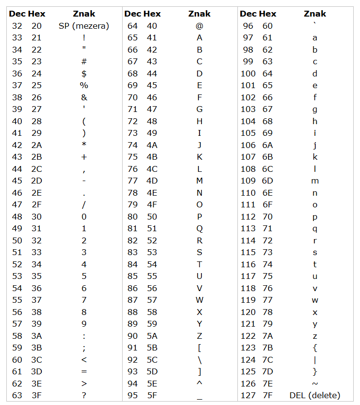

Druhy šifer
A1Z26 šifra
- V této šifře je každému písmenu abecedy přřazeno číslo, např. A=1, B=2...
Atbash šifra
- Zde je písmeno abecedy zaměněné za písmeno jemu opačné, např. A=Z, B=Y...
Bazová šifra
- každé písmeno je nahrazeno jeho ascii hodnotou

Caesarova šifra
- Spočívá v posunu písmena v abecedě o určitý počet míst.
Mezerová šifra
- Do dvojic se zapíše písmeno před písmenem šifrovaného slova a písmeno po něm, např. T= SU (S je před ním, U je po něm)
Polybiův čtverec
- Šifrování podle čtverce, kam se rozepíše abeceda- radši se podívej na obrázek
Zpět k pergamenu!